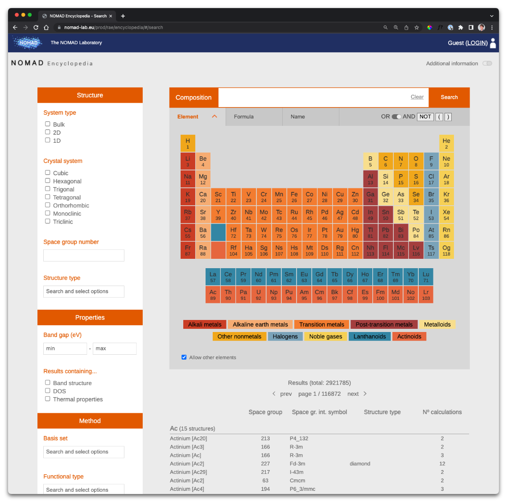

<!-- hero -->
<div class="nomad-hero" style="grid-template-columns: 500px 1fr; column-gap: 64px;">
    <div>
        <div class="hero-title">
            <span class="brandname">NOMAD Encyclopedia</span><br/>
            Understand computed materials data
        </div>
        <div class="hero-description">
            The NOMAD Encyclopedia allows users to see, compare, explore, and understand
            computed materials data. The NOMAD Encyclopedia provides this materials-oriented
            view on the NOMAD data.
        </div>
        <div>
            <a href="<%= urls.encyclopedia %>">
                <button>
                    <span class="mdc-button__ripple"></span>
                    <span class="mdc-button__label">Open the Encyclopedia</span>
                    <i class="material-icons mdc-button__icon" aria-hidden="true">arrow_forward</i>
                </button>
            </a>
        </div>
    </div>
    
</div>
